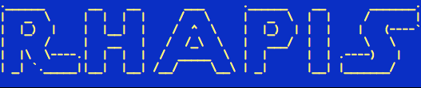
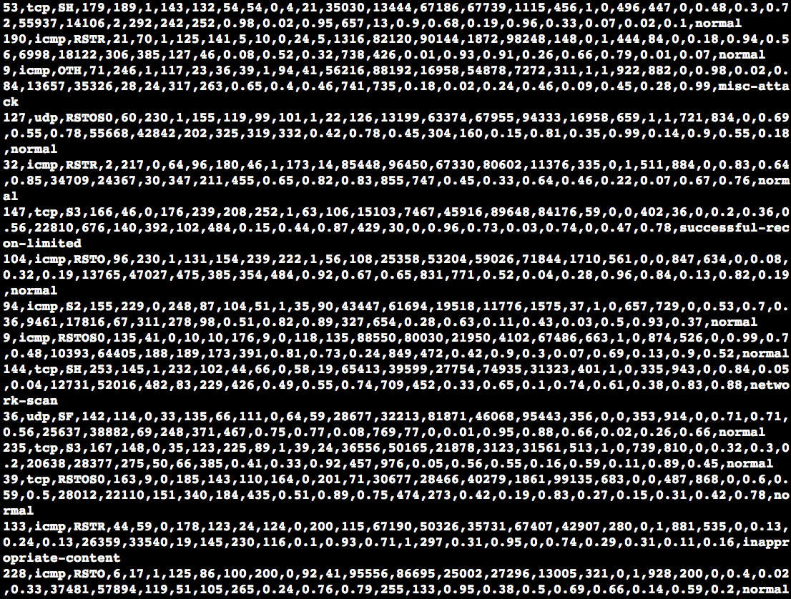

RHAPIS provides an environment which simulates network intrusion
detection systems and successfully imitates attacker's actions
Export synthetic datasets that contain almost every kind of possible attack
RHAPIS has been successfully tested on Windows. More information can be found
here

The current software was created by Fanis Siampos in 2014 and it is written in Lua
RHAPIS was ranked in the top-20 ideas in the
4th i-bank Innovation & Technology Contest
BTC:1C14CxKrc4YaFxEzvNot3CvoMitnYxK5eK · LTC:LfC74f2yFRfgW1MWTgU7M8762e8LJDbcT1